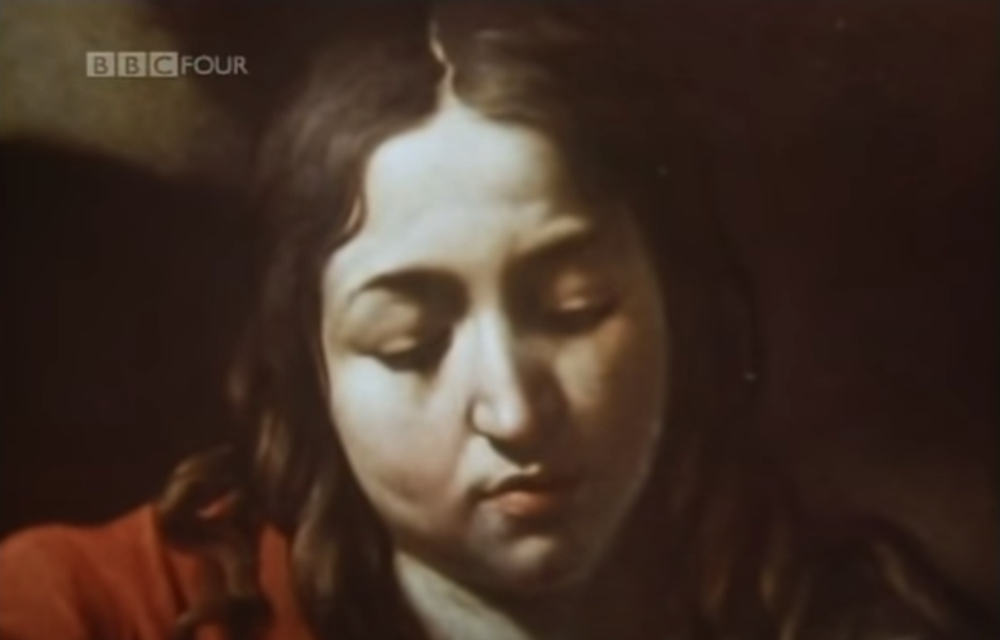
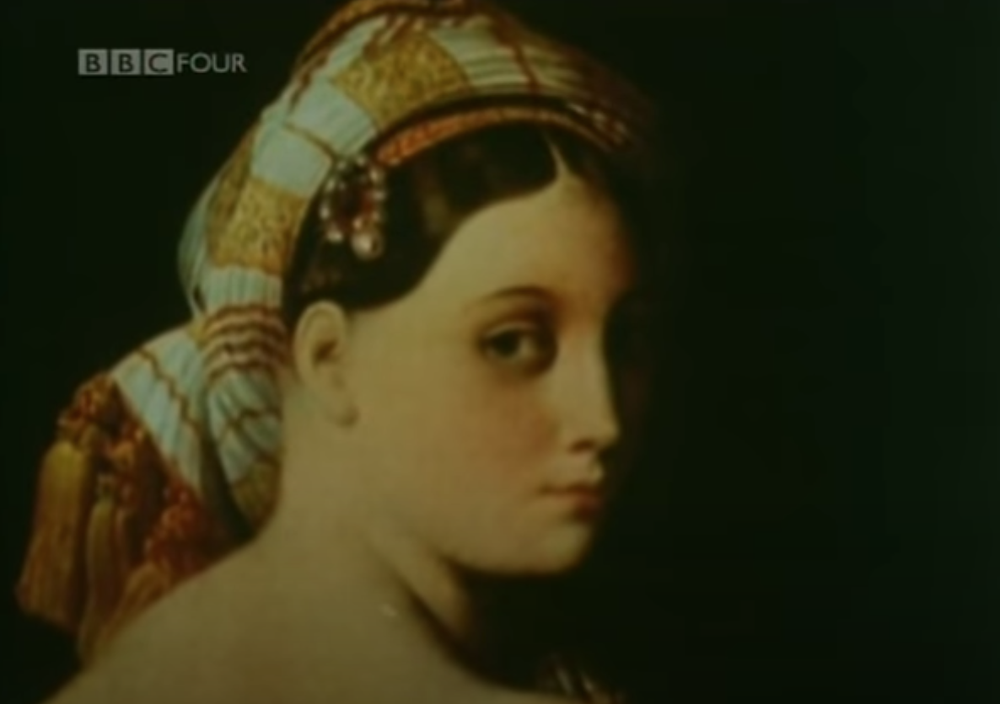
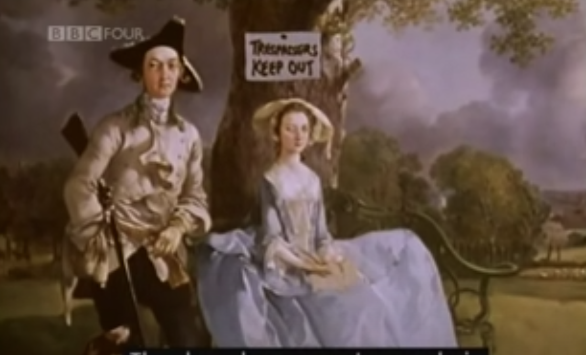
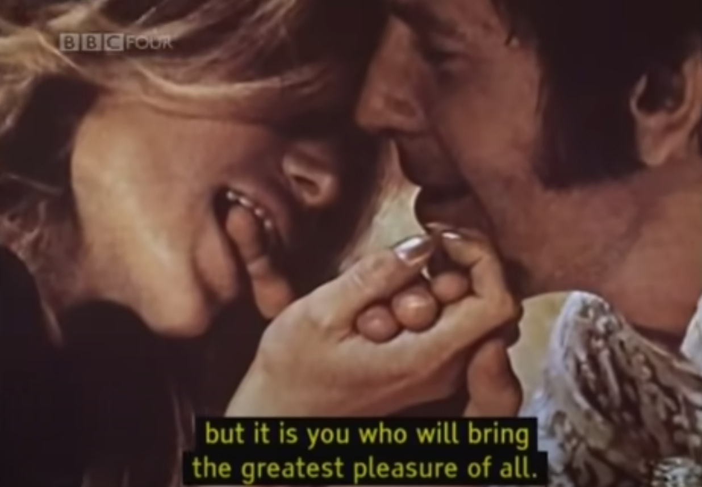

In Ways of Seeing Part 1, emphasis was put on the way context matters so much to still images, whether that means the platform it’s being displayed on (i.e. the different forms of technology used to display it), the physical space it takes up, or the moment in time that you happen to be seeing it (seeing the Goya painting by itself vs the jarring contrast between the light commercial and the execution footage). It’s really interesting the way images can be manipulated by focusing on specific parts, and it’s also eye opening to see that an image can mean something completely different depending on an individual’s life circumstances. It was also interesting to note the way that sound and music matters a lot more than we realize in the experience we have looking at things. Overall, this video speaks to the power of technology and how much it can affect our perception of the world around us.
Ways of Seeing 2 focuses on the idea of naked vs nude (being the rawest version of yourself vs others perceiving you to be without clothes but not acknowledging you as a person). It highlights negative societal norms regarding body image for women because of men, and it introduces the idea of the spectator as the “second most important person” in nude paintings (i.e. how the person is looking at the spectator). An interesting question was posed in this video - do nudes celebrate the women in them, or the male voyeur? Is their sexuality WITHIN the frame or IN FRONT of it?
The main question posed by Ways of Seeing 3 is where the value of paintings comes from. It explores the idea of “real” as something that you can pick up, and emphasizes how ownership is closely associated with “real” and unique objects. Berger also points out how art used to celebrate wealth and power, and how in the current day the ideology behind images has changed: now, the sight of something makes us want to possess it. The message I took from this video is that technology has broken the “oil painting tradition”.
Ways of Seeing 4 is largely focused on the present day, and the idea of glamour. An important quote I took from it was that “we are surrounded by images of an alternative way of life”; glamour is a product of envy, from seeing so many images of what could be, and from not having the things we see in advertisements. Berger explains how publicity plays on fears of not succeeding and fears of not being desirable - and overall, publicity really demonstrates the power of the image on everyday life.
An interesting point that berger brings up is that oil paintings show what is ALREADY owned by the owner (enhancing their view of themselves as they already were), while publicity/ads serve as something that is obtainable but not owned (ads suggest that if we purchase the things being advertised, our lives will become different than they currently are).
